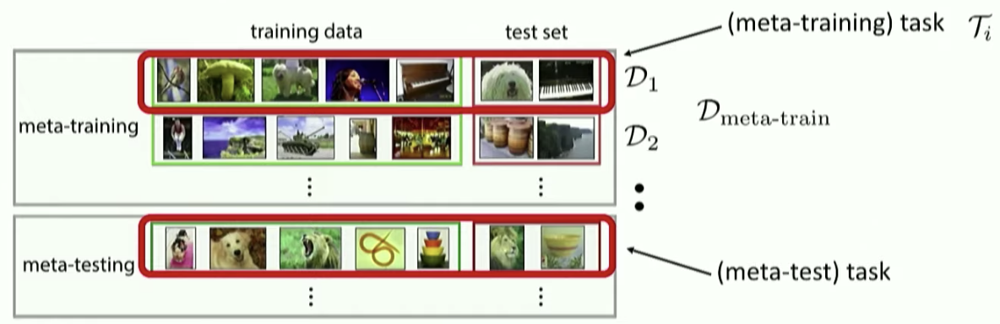

Preface
I choose to learn meta-learning through the stanford's coursework. Prof.Song and Dr.Xu ask me do some work around reinforcement learning and meta learning. Therefore, I choose to learn meta learning from stanford's coursework by Chelsea Finn.
MetaLearning Learning Note - 1
Stanford CS330: Multi-Task and Meta-Learning, 2019 | Lecture 2 - Multi-Task & Meta-Learning Basics
First it introduce some notation for meta-learning. Then it has a task descriptor! Use features to perform personalization and we have the summary object as below:
The course said that the one-hot vector to restrcit the share parameters.
concat and additve conditional representive; multi head multiplcative;
- It turn into a problem dependent NN tuning
- largely guided by intution and knowledge
- an art than science
Then we will introduce some challenges
- Negative transfer: independent network works better; because optimization challenges; limited representation capacity
there are softparameter sharing
- overfitting; means you do not share enough.
Case study: recommending what video to wacht next in Youtube; Input is what the user is currently watching plus user features. First generate candidate videos pool.
And for the input, there are query video; candidate video; user & context features. binary classfication like user click; regression task like time spent; And the Youtube use a softmax gating; Multi gate technique to consider all these features softly.
Then they introduce the meta learning.
Two ways to view meta-learning
-
mechanistic view
-
probabilistic view
In the supervised learning under mechanistic view we need to maxium this formula: which means the parameters under a data distribution's value; Under probablitistic view, we need to which means under what distribution will generate ths data distribution that we call likelihood.
means the data in the new task. Therefore, the meta learning can be summarized as below:
First we call meta-learning and second we call adaption.
The key idea of meta-learning is "test and train must match"
is the task sepcific parameters given by our task and our goal is to maximize which is different from task. Then \theta can leads to

we can see in the above figure that shows the meta dataset's difference and we want to get the best
can be taken as the hyperparameters; network architectures
Question: what is the before we learn the
Sol: Oh! we use meta-train set to learn the then use this to learn the
Summary
Today I learn the introduction of multi task learning and meta learning. It looks interesting. I figure out meta learning's core proerty. We use meta train to learn in train data of meta-train set and then use to learn in test set of meta-train set. Finally, we get and learn in the training set and test it in test set. Let me keep learning and review this part in the future work.